回路講習１
抵抗器
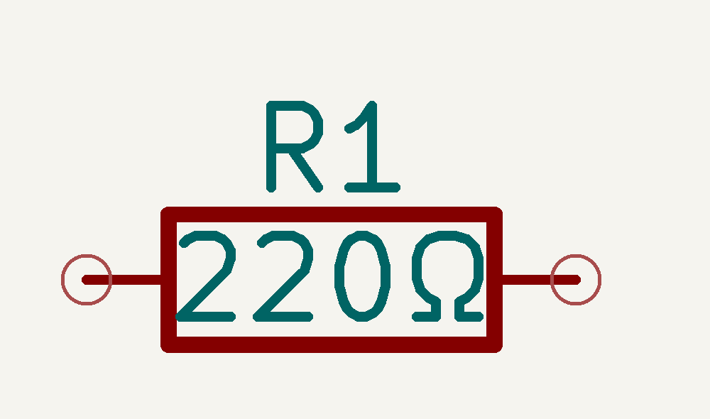
最も基本的な素子．単位はオーム[Ω] * 電流の大きさを制限 * 電流を電圧に変換することも
種類
- ☆炭素被膜抵抗 一般的なリード抵抗
- ☆メタルグレース抵抗 一般的なチップ抵抗
- 金属皮膜抵抗 精度・安定性よし
- 酸化金属皮膜抵抗 耐電力大
カラーコードの読み方
| カラー | 数値 | 乗数 | 誤差 |
|---|---|---|---|
| 黒 | 0 | 10^0 | - |
| 茶 | 1 | 10^1 | ±1% |
| 赤 | 2 | 10^2 | ±2% |
| 橙 | 3 | 10^3 | - |
| 黄 | 4 | 10^4 | - |
| 緑 | 5 | 10^5 | ±0.5% |
| 青 | 6 | 10^6 | ±0.25% |
| 紫 | 7 | 10^7 | ±0.1% |
| 灰 | 8 | 10^8 | ±0.05% |
| 白 | 9 | 10^9 | - |
| 金 | - | 10^-1 | ±5% |
| 銀 | - | 10^-2 | ±10% |
コンデンサ
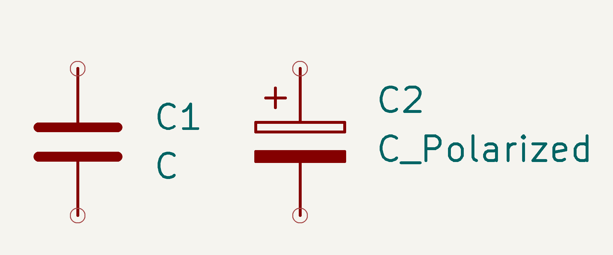
電荷を蓄える素子．単位はファラド[F] * 交流信号の通過を許可 * 電圧の安定化やフィルタとして使用
種類
- ☆セラミックコンデンサ 小型で高周波特性に優れる
- ☆電解コンデンサ 大容量で極性がある
- フィルムコンデンサ 中高電圧での使用に適する
ダイオード
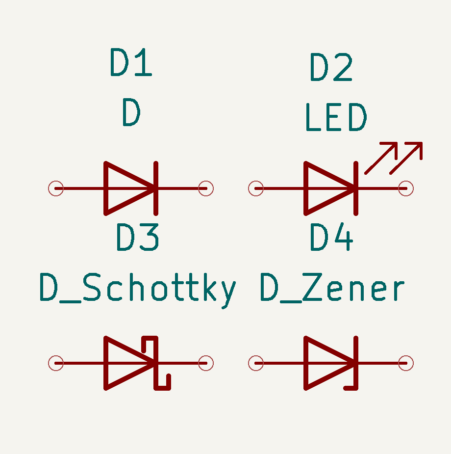
一方向にのみ電流を流す素子
-
順方向電圧降下がある (シリコン: 約0.7V)
-
整流や電圧保護に使用
種類
-
シリコンダイオード 一般的な用途
-
ショットキーバリアダイオード スイッチング特性が早い
-
ゼナーダイオード 電圧リファレンスとして使用
-
LED (発光ダイオード) 光を放出する
トランジスタ，FET
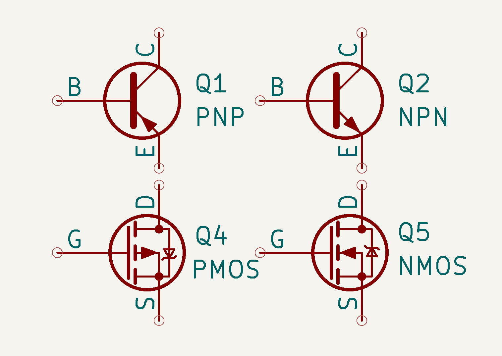
電流を増幅する素子
- ベース,エミッタ,コレクタ （トランジスタ）
- ゲート,ソース,ドレイン （FET）
- 増幅回路やスイッチとして使用
種類
-
バイポーラトランジスタ (BJT) NPNとPNPタイプ
-
フィールド効果トランジスタ (FET) 電界効果を利用 (例: MOSFET)
フォトカプラ
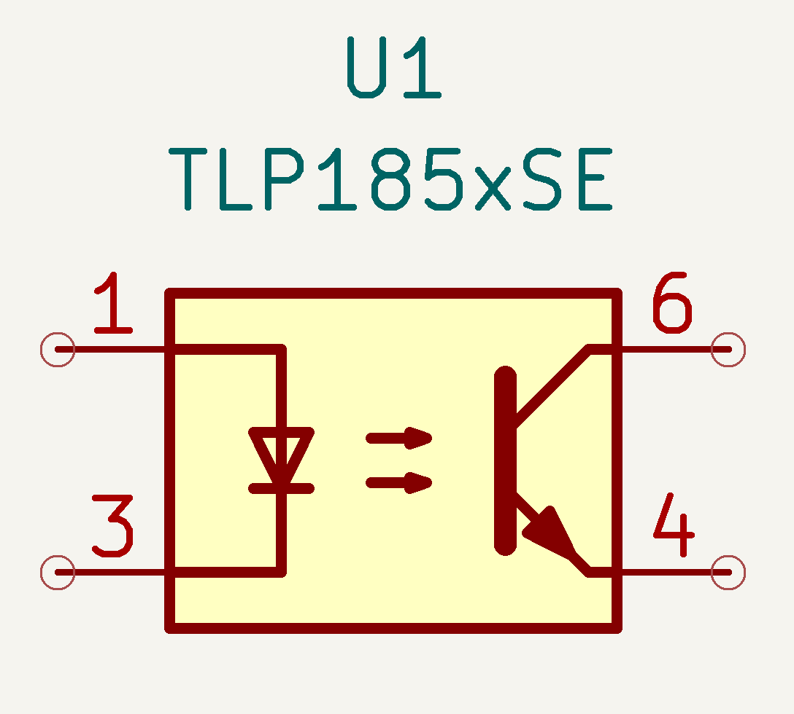
光を使い信号を伝達する絶縁デバイス
一次側の発光素子から 二次側のフォトトランジスタへ 信号伝達

三端子レギュレーター
-
降圧素子
-
端子が3つ (入力・グラウンド・出力）
-
三端子レギュレータは落とした分の電圧をすべて
熱として消費
論理回路
論理回路は、デジタル信号を扱う回路で、0と1の二つの状態を持つ信号を処理します。 基本的な論理ゲート ANDゲート ORゲート NOTゲート NANDゲート NORゲート XORゲート XNORゲート
基本論理ゲートの動作
-
ANDゲート -> 入力が全て1の時のみ出力が1
-
ORゲート -> 入力のどれかが1の時出力が1
-
NOTゲート -> 入力が0の時出力が1、入力が1の時出力が0
-
NANDゲート -> ANDゲートの出力を反転
-
NORゲート -> ORゲートの出力を反転
-
XORゲート -> 入力が異なる時出力が
-
XNORゲート -> XORゲートの出力を反転
論理ゲートの真理値表
| A | B | AND | OR | NOT A | NAND | NOR | XOR | XNOR |
|---|---|---|---|---|---|---|---|---|
| 0 | 0 | 0 | 0 | 1 | 1 | 1 | 0 | 1 |
| 0 | 1 | 0 | 1 | 1 | 1 | 0 | 1 | 0 |
| 1 | 0 | 0 | 1 | 0 | 1 | 0 | 1 | 0 |
| 1 | 1 | 1 | 1 | 0 | 0 | 0 | 0 | 1 |
74HCxxシリーズ
74HCxxシリーズは、高速CMOSロジックICで、一般的な論理回路を実装するためのものです。
主なIC
- 74HC00: 4つの2入力NANDゲート
- 74HC02: 4つの2入力NORゲート
- 74HC04: 6つのインバータ（NOTゲート）
- 74HC08: 4つの2入力ANDゲート
- 74HC32: 4つの2入力ORゲート
74HC00のピン配置と機能
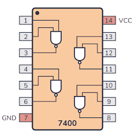
ピン配置
- Vcc: 電源
- GND: 接地
- 各入力と出力ピンが4つのNANDゲートに対応
実際にロボコンで使われている回路を見てみよう
モタドラとは
マイコンなどの制御部からの指示を受けてモーターを駆動、制御するためのデバイス

AltairMD_V7
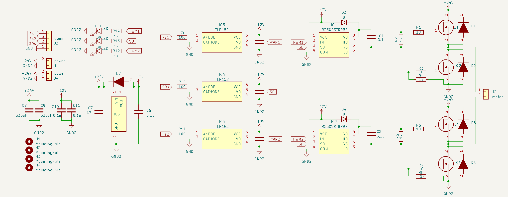
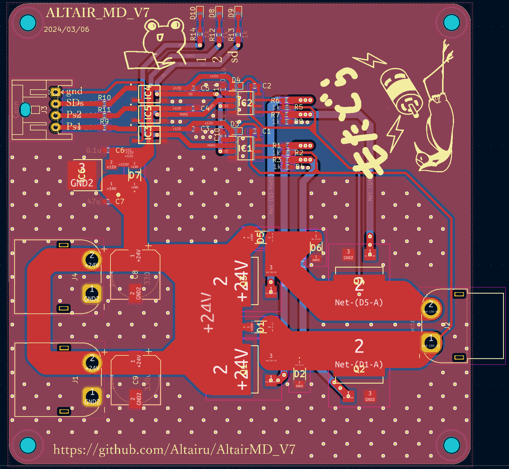 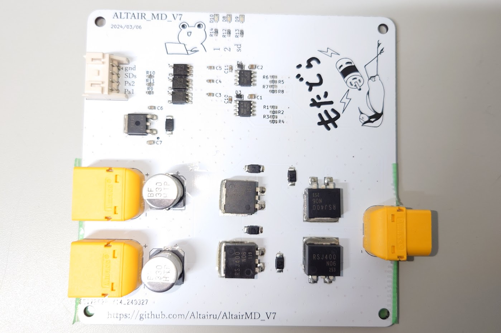
仕様
- 30V~10V(フォトカプラを変更すると10V以下も可)
- 最大40A
| SDs | Ps1 | Ps2 | 出力 |
|---|---|---|---|
| HIGH | LOW | LOW | 停止 |
| HIGH | LOW | HIGH | 逆転 |
| HIGH | HIGH | LOW | 正転 |
| HIGH | HIGH | HIGH | ブレーキ（非推奨） |
| LOW | X | X | 0 |
降圧
三端子レギュレーター
NJM7812SDL1
- 12Vに降圧
- 端子が3つ(入力・グラウンド・出力）
- 三端子レギュレータは落とした分の電圧をすべて
熱として消費

-
ダイオード レギュレータに逆電流が流れるのを防止
-
コンデンサ コンデンサは入力側と出力側に0.1～10[uF]程度入れるのが一般的
データシートを読もう！
フォトカプラ

- 電源電圧min.：10V
- 電源電圧max.：30V
- 出力電流：2A
- 入力電流max.：20mA
- 上昇応答時間：95ns
- 下降応答時間：110ns
MOSFET
Nch 100V 40A Power MOSFET
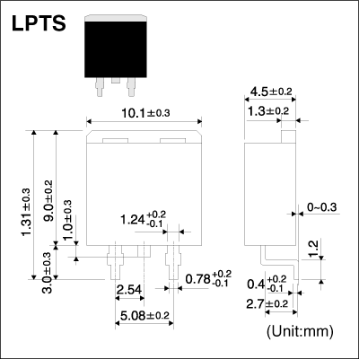 * 4V駆動タイプ * Nチャンネル パワーMOSFET * 高速スイッチング * 駆動回路が簡単 * 並列使用が容易
ゲート抵抗は10[Ω]で設定している
ハーフブリッジゲートドライバ
IR2302STRPBF
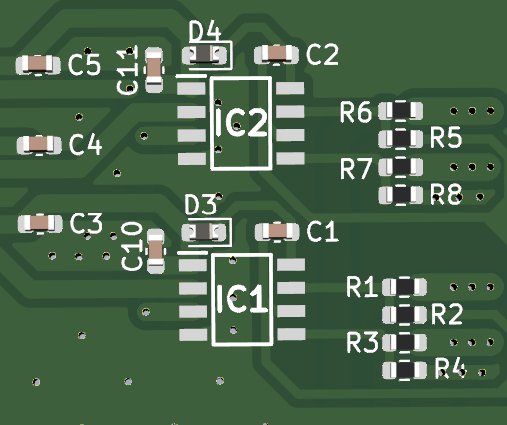
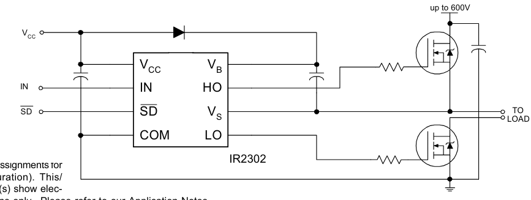
- IN端子 ハイサイドMOSFETをONにするか、ローサイドMOSFETをONにするかの切り替えを行う Hが入力されるとハイサイド、Lが入力されるとローサイドがONとなる
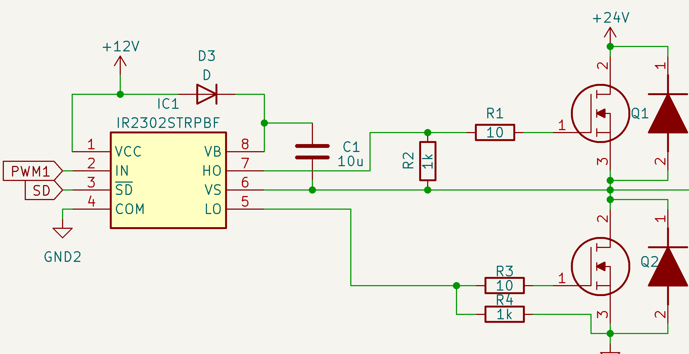
ハイサイドにNchMOSFETを使うためにブーストラップ回路を使用
* ブートストラップコンデンサの容量は[10uF]
* ブートストラップダイオード
(ファストリカバリダイオード)
* 100％出力は不可
ブートストラップ回路の制約で
コンデンサのチャージ時間が必要.
Ｈブリッジ回路

| Ps1 | Ps2 | Q1 | Q2 | Q3 | Q4 | 1 | 2 |
|---|---|---|---|---|---|---|---|
| L | L | H | L | H | L | open | open |
| L | H | H | H | L | L | L | H |
| H | L | L | L | H | H | H | L |
| H | H | H | H | H | H | L | L |
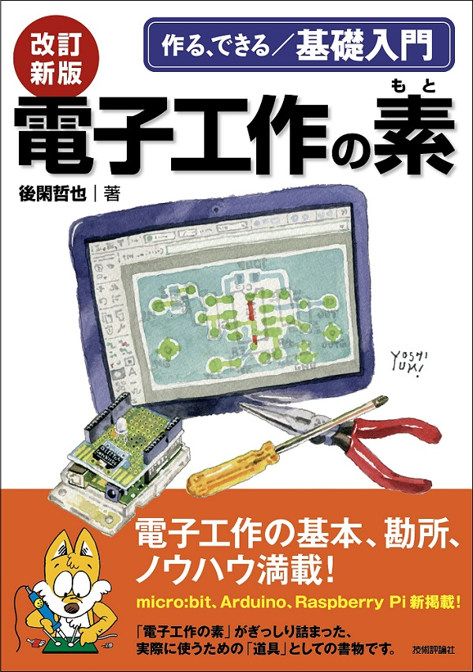
電子工作の素を読もう
ここに回路のすべてが⁉